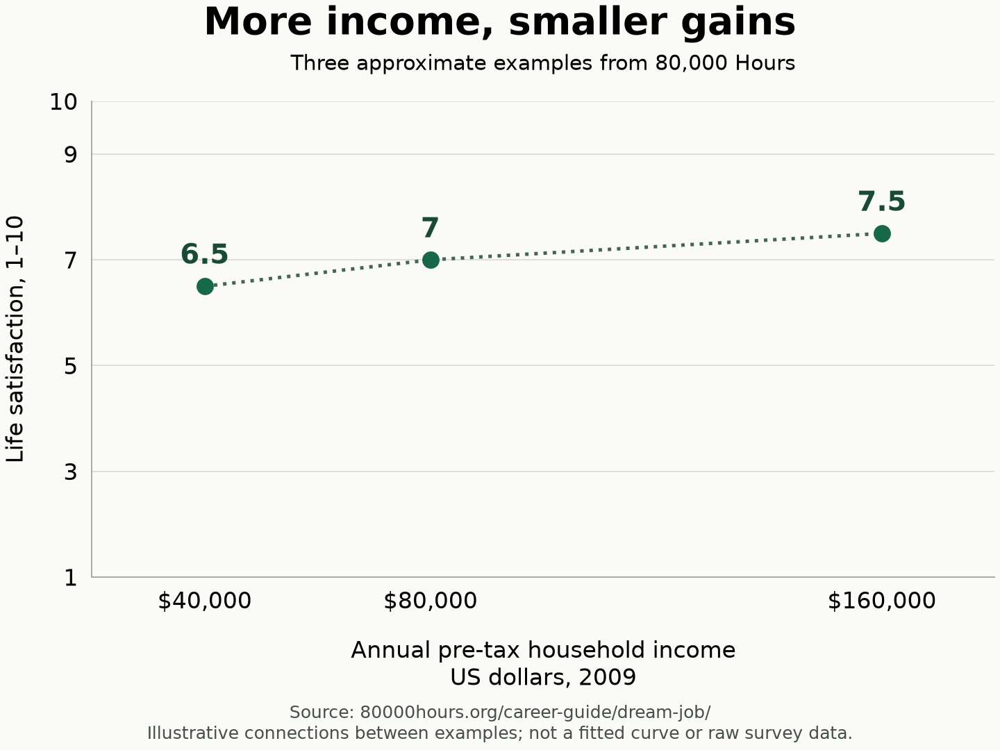

Original dictation/draft
I want to write an article which talks about the 80,000 hours career guide and book. it's a free online organization, free book that they have as a PDF, or you can get the book on Amazon as a hardcover copy. but I want to talk about how important it is for Muslims, especially Muslims in the Arab community, to read this book.
This is it on Amazon
https://amzn.to/4A7XnBB https://80000hours.org/career-guide/
the reason this is very important is because many people in Arab families, not necessarily Muslim, but Arab families, they really push people to be either doctors, lawyers, engineers, things that have high status, high worldly status, and they don't really focus on what actually is gonna make you good in life and happy
I want to mention that there's nothing wrong with these careers, and if you enjoy it and it matches what it is that you want to do, it matches your lifestyle, the pay that you want to do, everything based on the 80,000 hours book, and what makes for a dream job according to the book, which you can also look it up if you want, then that's totally fine. you should do it. but I'm just saying in the culture, in the Arab culture, it's really an issue. and I encourage all young people before they start to spend their lives on a career, either by focusing their major in college, especially before they choose a major in college, so you don't get into any student loans or any student debt, and waste your time all in the books, meaning studying, studying, studying, for something that you've had no real world practice or application in, and then you get to the point where maybe this is not exactly what I want to do, and you kinda set yourself up for failure that way
It's not that they intended to set you up for failure, but it's that you ended up doing something that's not um what really makes for a dream job, and that's why it's very important for young people to to read this book. It's very short and basically shows you that what you might think will make for a dream job isn't.
Now I also want to relate this to Islam is because we know that for Islam the the most important thing is we're here for a test. We're here to seek the pleasure of Allah. And if Allah is pleased with us and we are pleased with Him, then Allah knows best whatever career we'll do and what will be most beneficial for us. And for the sake of Allah subhanahu wa ta'ala.
But as most of me we should always be focusing on how we can do the most good for our communities, for people, for humanity, for wherever and whoever.
Well basically I just want to stress how important it is to read this career guide, especially if you're a young person. It's only a few minutes to read.
Basically the main thing is that you're gonna spend over eighty thousand hours in your career working. So you wanna at least spend a few hours trying to figure out how to pick a good career. And what career is gonna make you happy, good for your lifestyle. And this book, which is also online, shows you and gives you the knowledge on how to do so. And people will be surprised that money is not always the number one factor, especially since happiness for most people does not go up after around sixty thousand US dollars a year or something from the book. You can double check that.
Edited draft
Before you choose a major, read 80,000 Hours
If you're a young Muslim, especially if you come from an Arab family, I really encourage you to read the 80,000 Hours career guide before you choose your college major.
The name comes from a simple estimate: 40 hours a week, 50 weeks a year, for 40 years. That's about 80,000 hours spent working. If you're going to give that much of your life to a career, spending a few hours thinking carefully about your choice makes sense. The career guide is free to read online.
I've noticed pressure to become a doctor, lawyer, or engineer among friends, in my surroundings, and in my own family. All my friends want to be doctors. In Arab families, it's common to hear the advice to become a doctor because it means good money and a comfortable life. This isn't every family, and I'm sure other cultures experience it too. But it's familiar enough that I want young people in our community to think about it early.
It's hard to question a path when your friends are choosing it and your family respects it. Still, medicine is a job with daily tasks and responsibilities. The promise of an easy life doesn't tell you whether you care about that work or want to learn to do it well.
There's nothing wrong with those careers. If you enjoy the work, can become good at it, and it fits the life you want, go for it. That includes the income you need and the hours you're willing to work. My concern is choosing a career mainly because other people respect the title.
Find out what the work is actually like
A family can want the best for you and still push you towards something that doesn't suit you. They didn't intend to set you up for disappointment. But good intentions don't answer the questions you need to ask before committing years of your life.
You can spend years studying, studying, studying, possibly taking on student debt, without much experience of the work you're preparing to do. Then you finally get there and think, "Maybe this isn't what I wanted."
That's why I want young people to investigate before choosing a major. Talk to people who do the work. Ask about an ordinary working day, including the parts they dislike. Where possible, shadow someone, try an internship, or do a small project related to the field. You don't need your whole life figured out. You need more to go on than a title and an imagined salary.
What makes a job worth doing?
The guide's chapter on a dream job points to five things: engaging tasks, helping others, work you can become good at, supportive colleagues, and avoiding serious drawbacks such as unfair pay or hours that clash with your personal life.
It also discusses finding a level of challenge you can handle, with enough support to grow. A job being easy isn't enough to make it fulfilling.
That gives you more useful questions to ask about a career. Would I enjoy the daily tasks? Could I develop the skills? Would the schedule work for me? Who would I be helping?
Money belongs in that conversation. You need to cover your expenses and responsibilities. But I wouldn't base a career choice on the biggest salary alone.
The guide gives a useful example of diminishing returns. In the US survey it discusses, households earning $40,000 before tax reported life satisfaction of about 6.5 out of 10. At $80,000, the figure was about 7. Reaching roughly 7.5 was associated with another doubling of income to $160,000. That's a much bigger income for a modest difference in how people rated their lives. See the guide's discussion of money and life satisfaction.
That's an approximately logarithmic relationship: each doubling of income is associated with a similar increase in life satisfaction, so each extra dollar brings a smaller gain. These are historical US household figures in 2009 dollars, not a current salary target or a guarantee about what a pay rise will do for you. But they give you a reason to look carefully at what you're giving up for higher pay.

For me, the practical question is whether the extra pay is worth what a particular job asks of you.
How I connect this to Islam
As a Muslim, I want seeking Allah's pleasure to come first in how I think about my career. The Quran describes life and death as a test of who does best in their deeds. Surah Al-Mulk, 67:2, in M. A. S. Abdel Haleem's translation reminds me to think about what I'm doing with the years I have.
Intention matters here. The Prophet ﷺ taught that the reward of deeds depends on intentions. Sahih al-Bukhari 1. For me, that means asking why I want a particular career and what I intend to do with what I earn.
If you're good at a high-paying job, care about the work, and it fits your lifestyle, there's no problem with wanting that opportunity. You might want to support your family and have more to give. The Prophet ﷺ taught that the giving hand is better than the receiving hand, while also instructing people to begin with their dependents. Sahih al-Bukhari 1427 and 1428.
I also want to take the work itself seriously. The narration about Allah loving that a person does their work well was graded hasan by al-Albani, although al-Busiri judged its chain weak. Al-Albani's assessment, al-Busiri's assessment. I take that as encouragement to work with care and develop my ability. A respected title wouldn't be enough for me if I didn't want to do the actual work well.
And helping people isn't limited to one profession or to giving money. The Prophet ﷺ described good deeds as charity. Sahih al-Bukhari 6021. That gives me a reason to look broadly at where I can be useful.
This is the connection I see with 80,000 Hours. Its advice asks us to think about how our work can benefit others. I approach that question with the intention of pleasing Allah, subhanahu wa ta'ala.
You can give without changing careers
The guide also explains how you can help others without changing jobs, including by giving to effective charities. It points readers towards GiveWell, which evaluates charitable programs using research and evidence about their results. Its recommended programs include malaria prevention through medication and mosquito nets. GiveWell publishes its evidence and estimates of cost-effectiveness, so you can investigate what your donation could achieve.
I find that useful even for someone who already has a career. You can care about the work you do and think carefully about where your charity goes.
The Quran's example of spending in Allah's cause is a grain producing seven ears, each bearing a hundred grains, with Allah granting further increase to whom He wills. Surah Al-Baqarah, 2:261. That is an encouragement to seek His reward through giving.
Wanting good in this life can sit alongside wanting good in the Hereafter. The Quran includes the prayer for both in Surah Al-Baqarah, 2:201. My hope is that young Muslims will bring that intention to their choices early, ask Allah for guidance, and take the time to learn about the work they are considering.
Give this decision a few hours
Start with the free online guide, especially the chapter on what makes a fulfilling job. You can also use my Amazon link if you prefer buying a copy.
You can begin in a few minutes, but set aside a couple of hours for the guide rather than expecting to finish it in one short sitting.
If you haven't chosen your major yet, this is a good time to read it. Before committing years to preparing for a career, spend a little time finding out whether it's work you want to do and how you hope to benefit people through it.